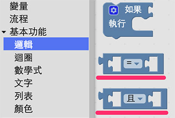

教學範例 8：超音波傳感器控制三色 LED 燈
當我們由上一個範例學會了用超音波傳感器控制 LED 燈之後，這個範例應該就輕鬆不少，這個範例最主要是希望能藉由三色 LED 燈顏色上的變化，對應距離的改變，如此一來我們就可以藉由燈號來判斷距離。
範例影片展示
影片對應範例：http://blockly.webduino.io/?page=tutorials/ultrasonic-4
接線與實作
雖然超音波傳感器與三色 LED 可以分別用 webduino 的兩個排插來接，因為三色 LED 燈需要用到 PWM 腳位 ( 不能接在 7 和 8 )，所以我們必須要用到麵包板或杜邦線，用電線引出腳位，把超音波傳感器的 VCC 接在 VCC，Trig 接在 7，Echo 接在 8，GND 就接在 GND 的腳位，三色 LED 的 VCC 接在 3.3v 的腳位，紅色 R 接 10，藍色 B 接 6，綠色 G 接 9。
接線示意圖：

實際接線照片：


Webduino Blockly 操作解析
打開 Webduino Blockly 編輯工具 ( http://blockly.webduino.io )，因為這個範例會用網頁「顏色調整」來將超音波不同距離的顏色顯示在出來，同時三色 LED 燈也會跟著變色，所以要先點選右上方「網頁互動測試」的按鈕，打開內嵌測試的網頁，用下拉選單選擇「顏色調整」，就會出現個顏色區域，我們會將超音波所測得的距離來顯示不同顏色在上面。

把開發板放到編輯畫面裡，填入對應的 Webduino 開發板名稱，開發板內放入超音波積木，名稱設定為 ultrasonic，腳位設定為 Trig 7，Echi 8，接著放入三色 LED 燈的積木，名稱為 rgbled，紅色腳位 10，綠色腳位 9，藍色腳位 8。

放入每 500 毫秒偵測一次的積木，裡面先放入「邏輯」的積木，不過因為我們有許多距離要判斷，因此除了「否則」，還要有一些「否則如果」的積木缺口。

接著要使用另外兩塊邏輯積木，「且」這個邏輯積木，表示「and」，也就是左右兩個條件都滿足時才會成立。

就這樣我們可以組合出 0 ~ 10、10 ~ 20、20 ~ 30 和大於 30 公分四種距離的顏色。

完成後，確認開發板上線 ( 點選「檢查連線狀態」查詢 )，點選紅色的執行按鈕，用手或是遮蔽物在超音波傳感器前後晃動，就會看到在不同的距離，三色 LED 燈出現不同的顏色。 ( 解答：http://blockly.webduino.io/#-K5Lw1ZXmFnLvA971IbJ )
程式碼解析 ( jsbin 範例、檢查連線狀態 )
HTML 的 header 引入 webduino-all.min.js，目的在讓瀏覽器可以支援 WebComponents 以及 Webduino 所有的元件，如果是用 Blockly 編輯工具產生的程式碼，則要額外引入 webduino-blockly.js。
<script src="https://webduino.io/components/webduino-js/dist/webduino-all.min.js"></script>
<script src="http://webduinoio.github.io/webduino-blockly/webduino-blockly.js"></script>
HTML 裡頭有一個 div，負責顯示顏色。
<div id="demo-area-04-area"></div>
CSS 也就是這個 div 的長寬尺寸和預設的顏色。
#demo-area-04-area {
width: 90%;
height: 150px;
background: #ccc;
}
JavaScript 用了許多的 if、elseif 和 else，「且」這個積木在程式碼裡就是 && 的符號表示，由這些邏輯判斷，就可以在不同距離顯示不同顏色。
var ultrasonic;
var rgbled;
boardReady('', function (board) {
board.samplingInterval = 20;
ultrasonic = getUltrasonic(board, 7, 8);
rgbled = getRGBLed(board, 10, 9, 6);
ultrasonic.ping(function(cm){
console.log(ultrasonic.distance);
if (ultrasonic.distance > 0 && ultrasonic.distance <= 10) {
rgbled.setColor('#ff0000');
document.getElementById("demo-area-04-area").style.background = '#ff0000';
} else if (ultrasonic.distance > 10 && ultrasonic.distance <= 20) {
rgbled.setColor('#3333ff');
document.getElementById("demo-area-04-area").style.background = '#3333ff';
} else if (ultrasonic.distance > 20 && ultrasonic.distance <= 30) {
rgbled.setColor('#ffcc33');
document.getElementById("demo-area-04-area").style.background = '#ffcc33';
} else {
rgbled.setColor('#000000');
document.getElementById("demo-area-04-area").style.background = '#000000';
}
}, 500);
});
以上就是利用超音波傳感器，偵測並用距離來同時改變三色 LED 燈以及網頁區域的顏色。
完整程式碼：http://bin.webduino.io/kud/edit?html,css,js,output
解答：http://blockly.webduino.io/#-K5Lw1ZXmFnLvA971IbJ
超音波傳感器的延伸教學：
Webduino Blockly 課程 3-4：超音波傳感器控制三色 LED 燈顏色
Webduino Blockly 課程 3-6：超音波傳感器控制 Youtube 播放速度
Webduino Blockly 課程 3-5：超音波傳感器控制 youtube 的音量